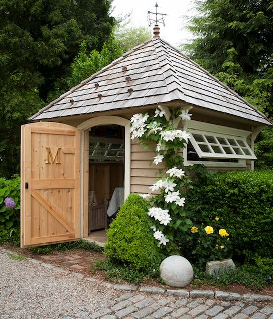

.png)
.PNG)
.PNG)
.PNG)
.PNG)
.PNG)
.JPG)
.JPG)
.PNG)
.PNG)


source
When I was a young girl, my family made many trips to Callaway Gardens. My brother and sister enjoyed eating breakfast at the Country Store; my mother liked seeing all the azaleas, and my father to this day still devours their muscadine sauce, but one of my favorite things to see there was Mr. Cason’s vegetable garden. I loved seeing the rows of plants growing in that big garden – especially the tomatoes, and there was the cutest little red roofed building amid all the greenery.
That was probably the first garden “shed” (if you can call it that) I became enamored with. I still love seeing them in gardens, and one day I hope we will have one here. (The blueprints for our home even included plans for a matching outbuilding. 🙂 )So while we are perusing all-things-garden for the next few posts, I thought you might enjoy taking a look at a few delightful outbuildings. Besides being utilitarian, they seem to add so much charm to a garden. First up…P. Allen Smith’s city garden shed. It too has a red roof! (You may remember reading about his Moss Mountain farmhouse here.) And of course the red door is perfect. 🙂
And while we are looking at sheds that belong to famous people, Ina Garten has one that is beautiful. Even if it doesn’t have a red roof, I love all the vines growing on it!
This next one could be a sister to Ina’s shed couldn’t it? It has a very similar style. Love the lattice on the roof for future climbing vines, and if we had a more formal garden, I would love to have a white obelisk like the one pictured there. The small patio would be wonderful for a summer meal.
Here is another one with a space for outdoor dining. I think this one fits perfectly with our house with its color and board and batten walls….hmm…might need to show this one to my husband. 🙂
I believe this next one is actually part of a cottage, but wouldn’t it make a great design for a garden building? And there’s more space for outdoor dining here as well.
Now I know all garden buildings don’t have to be dark or rustic. Here are a few white ones that are simply charming, and this first one with its pergola is gorgeous.
Can you believe this one surrounded by a picket fence is pre-fab construction??
More picket fencing with this one (and the interior of the New England home it goes with is very drool-worthy.)

There’s a touch of picket fencing with this one too. Notice that it has a window box on the side for added charm.
Another white garden building amid amazing flower beds.

This romantic beauty is certainly not where you are potting plants.

I love love love the simplicity of this one (and you really need to read the wild story at the accompanying blog post. It is amazing!)
goingtoseedinzone5.wordpress.com
Here is another very simple design – but pretty nonetheless. There are complete diy directions for building it at the website if you are interested in creating one like it.
How about a garden building made from old windows and salvaged items?
dishfunctionaldesigns.blogspot.com
This garden setting is luscious. The window boxes and plant on the door are charming, but that stacked stone pond is what I love most here.
I’m a sucker for the window boxes filled with geraniums on this building. Have you noticed how many of these have a cupola?
Okay. Forget the window box and cupola…just put a shelf above the door and a picnic table in the yard. 🙂
If we had a mountain cabin (in Highlands!) I would want this little garden shed out back.
Or perhaps this one. I particularly like the porch on the side with the potting table there. (There’s another cupola!)

More sheds for the mountain cabin. You should check out Donna’s post(s) on her grapevine covered rustic garden shed. She built it herself.
Another lush setting for an outbuilding. I suppose you would need a ladder to fill those beautiful planters above the entrance, right?
Let’s totally change styles here. You probably remember this one from the Southern Living Idea House in Habersham from several years ago. The building itself is very simple, but the architectural details in the overhangs and the potting shelf add so much charm to it!
And finally, if we had a house in New England, this is exactly what I would want for our garden shed…gray shingled exterior, white trim, bright blue door and shutters (or maybe red 🙂 ) and a flag. And of course it wouldn’t be complete without the blue hydrangeas beside it.
So are you ready to build a garden shed in your yard? We don’t need any more projects around here for awhile, but when the to-do list shrinks, I think a little building out back could be added to the list. (I’ve got a spot in mind next to the apple trees. 🙂 )
Don’t forget about the giveaway we have with Timeless Settings going on until next Thursday, June 5, 2015. You can read all the details about it at the end of the post here. Just visit their site, come back and leave a comment about something you love there, and you are entered in the random drawing for all of this…
Hope you are having a great weekend and that you are enjoying a garden somewhere! I have a few geraniums to plant today, but I can hear the frogs croaking for rain.
Until next time…

***Giveaway has closed. Congratulations Amy!***


.PNG)
[…] In the Garden: 25 Charming Garden Sheds » Talk of the House – Jun 1, 2014 … That was probably the first garden “shed” (if you can call it that) I became enamored with. … Another white garden building amid amazing flower beds. … I particularly like the porch on the side with the potting table there. […]
What an amazing collection of wooden works!! I was recently planning of doing some changes for my garden and also to build a small store house around. They might not be so tough architecturally, but the look makes them awesome. They do add a charm towards the house. York Timber in U.K. can provide you with the similar type of catalog with bulk quality collection for sheds and the related wooden works.
I really love the shedds with outdoor dining space and window boxes. They are all beautiful. I think I like the rustic look best.
I want to step right into those photographs Thank you finding all this great inspiration
Fun potting sheds! My favorites are the drool-worthy New England ones. (I am going to be using that term, drool-worthy.) I checked out Timeless-Settings and love the bird photo frames on the stands. And, I am going to be checking out that site again. Love it!
Timeless Settings – what a great site! The post and plant markers are beautiful and but there are many, many other items I would cherish. Thanks for pointing us to this inspirational website.
What a wide variety of garden sheds. I enjoyed them all. Timeless Settings website is wonderful! I can see why you said “yes!” to them. 🙂 I love the vintage style caddy with bottles. Well, truth be told, the list of items I spied is quite long. I will need more time to stroll through their site. Thank you for sharing them with us.
Oh my! I loved this post, I had to stop myself from pinning them all : ) I have always wanted a garden shed like a few of these. I cant wait to see more of your garden progress!
Gosh…all those sheds were just great, wouldn’t mind any one of them in my yard.
Great post Kelly! Our shed has a vintage bike propped up against it, with flowers in the basket. Thanks to your post, I’ve got even more ideas for the shed. I also clicked on the Muscadine Sauce link, which led me to the recipe (copied it), which led me to the link to Calloway Gardens Country store (muscadine sauce ordered)! Our daughter is coming home to visit this weekend and I think the biscuits will be great for breakfast. Thanks!
Kelly,
The garden sheds are all lovely. My favorite is the very first one pictured. Thanks for sharing them with us.
I just love a cute shed! So many gardening possibilities around them! Sadly, our homeowners association won’t allow them where we live now. I hope that rule will change someday, but doubt it. Too many people regard sheds as strictly a spot to store more stuff, and let them deteriorate and look tacky. Or they buy those cheap metal ones that can blow away in a stiff wind. I had a cutie of a shed at our old home, with a perennial garden attached, and roses and clematis growing up the side. Would love to repeat that here at our new home!
Oh, these delightful “sheds” made me very reminiscent about the little playhouse that stood in my great-grandmother’s backyard when I was a child. I would step inside that little wonderland and play for hours with a miniature real china tea service at the little table & chairs. I imagine that I could easily while away the hours in one of these enchanting sheds, escaping the world for just a little while!
Thanks for sharing these, Kelly!
Yes-I am a collector of garden shed photos! Country Gardens magazine has a shed or two in every issue–a great place to browse & plan! 😉
Kelly,
This is a particularly dear topic to me. I have wanted a small structure in our backyard for years. Tight association rules and “want” more than “need” probably reads doing without. Still, I love seeing backyard cottage structures.
Karen
This is SO weird-sometimes your posts come through for me and sometimes they don’t! Anyway- I am glad this one did because I absolutely LOVE garden sheds. These are ALL wonderful- I would be hard pressed to pick a favorite. Hope you have a good week, Kelly- xo Diana
Kelly,
LOVED this post. Garden sheds are right up there with porches for me. There wasn’t a single shed that I didn’t like.
Sharon
Well, I absolutely loved this post. So many of the sheds I had seen before when I was looking for shed inspires, but quite a few here are new to me. It was dream of mine for many years to have a small outbuilding. Finally my husband, nephew and son built one for me last summer. It is a work in progress still. I am still tweaking it, as they say. I am currently working on landscaping. It has a lean to on it and I wish to screen it in this summer, I hope. I so enjoy it. I call it the Hen House, as it my “gal” hang out. I have vintage wicker pieces, a hutch and pedestal table I bought at the local flea market. I found a brand new fireplace mantel, at no other, than Goodwill. A builder had dropped several off to unload. What a score. Its fun. You will have your shed Kelly and it will be beautiful. Dreams do come true… I waited a long time, but it makes you savor it all the more when it finally happens. I will have to check out a few of your links. Wonderful post Kelly..
Debra
Well I love all these garden sheds too. I have a pretty neat one myself that my sweet husband built many years ago. I don’t know what I would do without it. It holds gobs and gobs of stuff!
I love that stacked stone wall too on the waterfall. I have often thought about attaching a greenhouse lean-to on the side of my shed made out of old windows. I read about Baldwin the crow. Such a sweet story… Love the tin pouring bucket in the catalog. It would certainly get used around here. Oh, I am getting your emails again but not by Bloglovin’. Crazzzzy!
Kelly: Absolutely amazing sheds! I don’t have one currently in my backyard, actually never thought of one, but this is giving me ideas. Thanks so much for posting. The landscaping is beautiful! Your blogs make me super happy:-)
Hmm, you’ve got my wheels turning. We have a shed with a trellis on it, but it looks nothing like these beauties! The one with the space for outdoor dining is pretty cool. Like you, I don’t need any more projects, but this will be a great reference when I do.
Do take a peak at the shed of Carolyn’s blog at Aiken House and Gardens. Super dreamy!
Kelly I was hoping that you were not going to ask your readers which is their fave! Honestly, I have hard enough time choosing a meal from a dinner menu :). I would love to have a shed if space permitted on my property. These sheds are so dreamy. Thank you for sharing.
Enjoyed viewing the garden sheds. They really add a lot of charm to the garden area. I have been visiting TS site and looking at more things. I especially like the bird bookends and the recipe holders. Can’t believe it is the first day of June!! Getting ready to bake a chicken with lemon and rosemary with herbed dressing, fresh creamed corn and a lemon cake! I must be in “yellow shade” mood:)
Yes please… My imagination runs away with images me in my very own garden shed… Thanks for sharing…
Hi Kelly- Just love everything at the Timeless Settings. Really could use the plant markers and wire baskets. Love your blog and all your neat ideas!
Donna
Hi Kelly. I love sheds and and all of these were great.
We have an Amish built shed with double doors and windows on either side and on both ends.
There are window boxes filled with red geraniums, green sweet potato vine and basil. I change it out with something different each year.
It has a couple and it’s painted dove gray with white shutters and trim.
We have hydrangeas and butterfly bushes planted on each end.
Some of your pics gave me more ideas for out back. Thank you for researching all of those.
I do like the double bucket with the bird. So many beautiful things on the site. Have a great day Kelly. Blessings, Becky
I am so excited that I am receiving e-mail notices of new posts from you AGAIN……hope they don’t stop.
I love these garden sheds so much….so many ideas. My husband made a marvelous chicken coup a few years ago that would have made a wonderful shed…but those darn chickens seem to like it too much.
I am going to have him look at these and maybe he’ll get the bug to build me one. Right now I have my corner of the garage,and this would give him more room in there…hint..hint….wink…wink.They really do have such charm and conjure up so many lovely ideas.
I hope you are having the great weather we have been experiencing lately here in NC, I know that the hot, humid weather is on the way, but it has been really nice.
Truly enjoyed your blog today. Admired the fabulous garden sheds. I’ m hoping to add a small potting table in our back this summer. Enjoy your summer break.